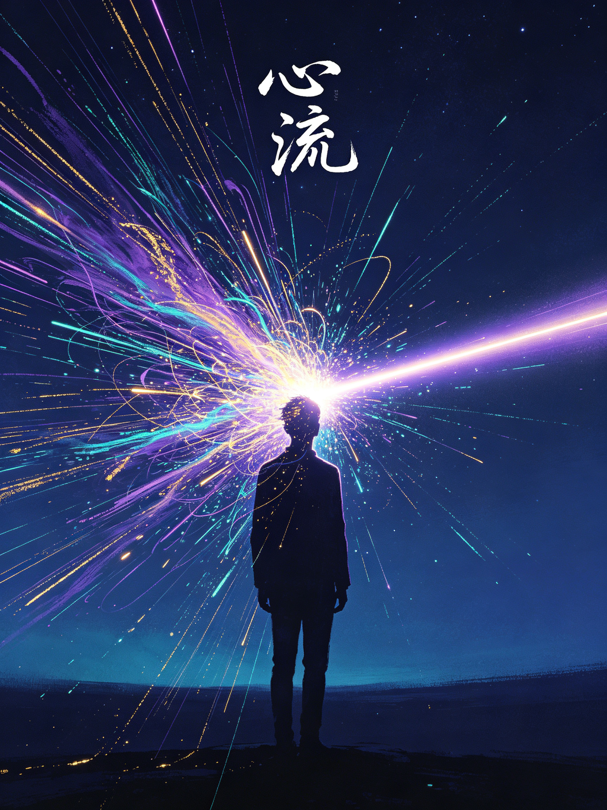

FLOW · MIHALY CSIKSZENTMIHALYI
心流
米哈里·契克森米哈赖 著积极心理学奠基之作最优体验心理学
人最幸福的时刻，往往不是躺平放松的时候，而是全身心投入一件有挑战的事的时候。米哈里花了三十年追踪全球数千人，把这个状态命名为「心流」：忘记时间、忘记自我、物我两忘。这本书告诉你：幸福不是等来的，是流出来的。
🎮 本书包含 12 个互动体验：心流自测、精神熵清除、心流通道导航、八要素配对、感官之乐、思维棋局、工作游戏化、深度对话、逆境心流、专注计时器、7天心流打卡、读后小测……读完你会明白：把涣散的意识聚焦成激光，就是幸福的方法。